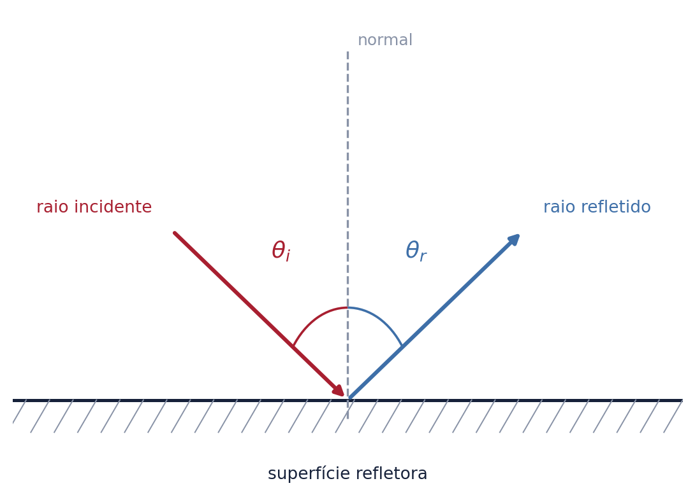
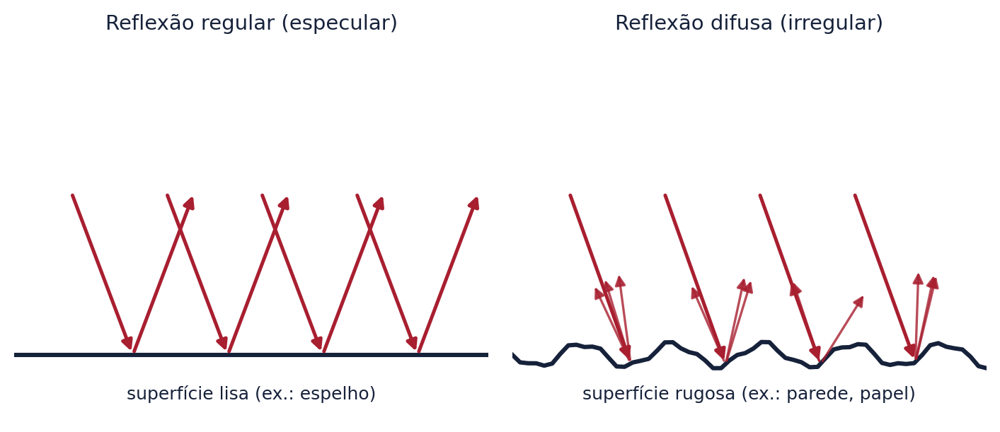
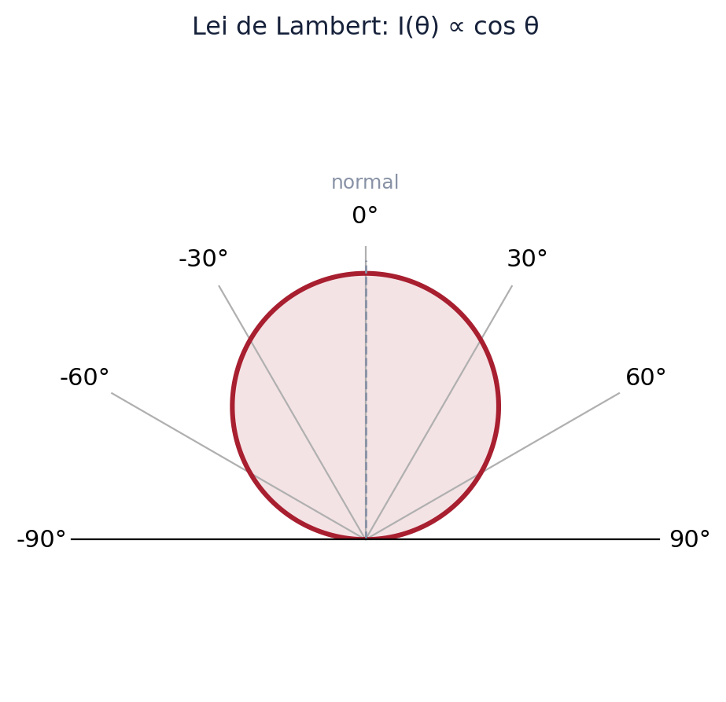
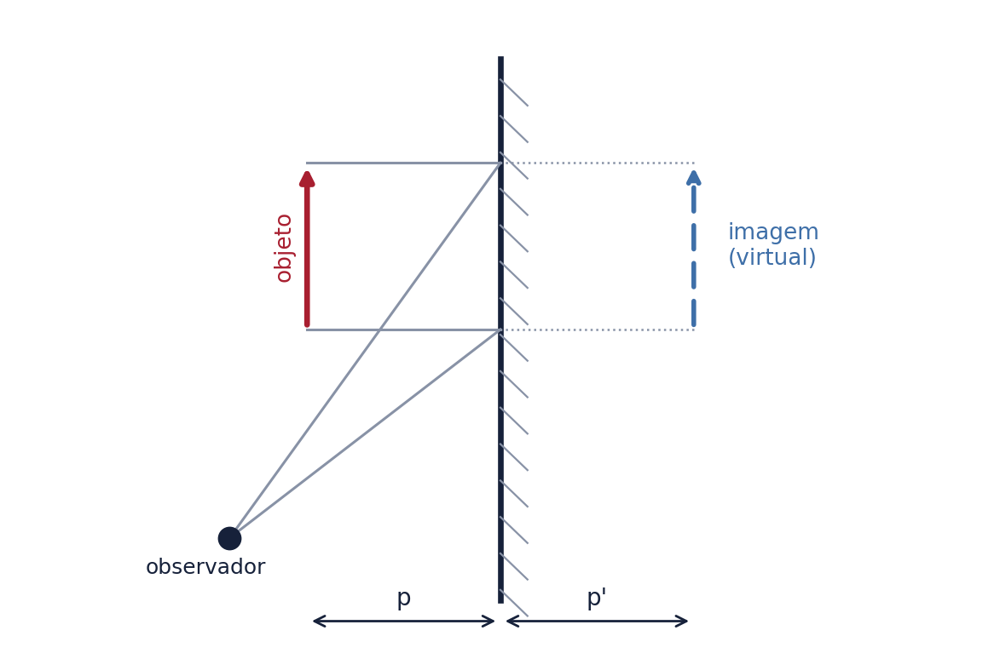
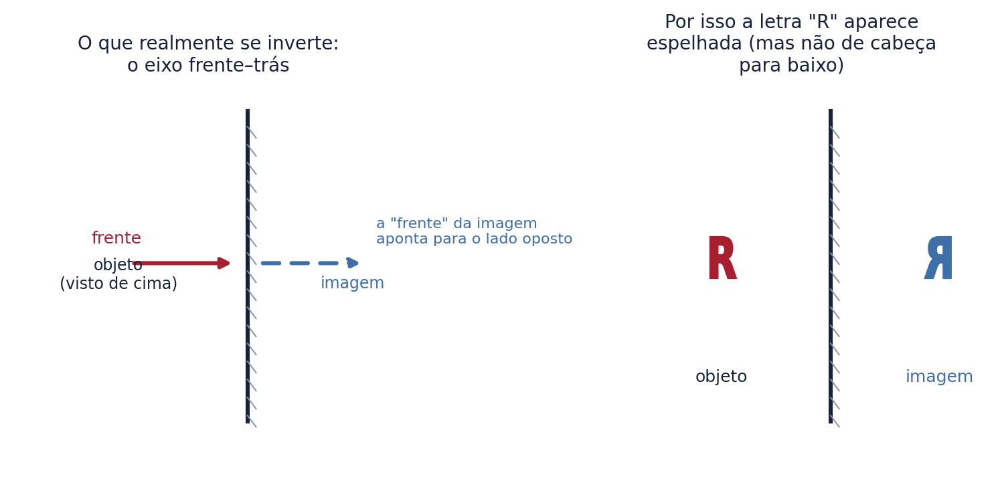
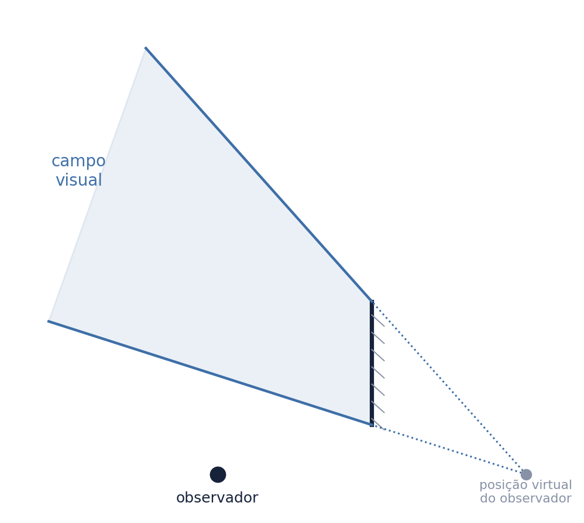
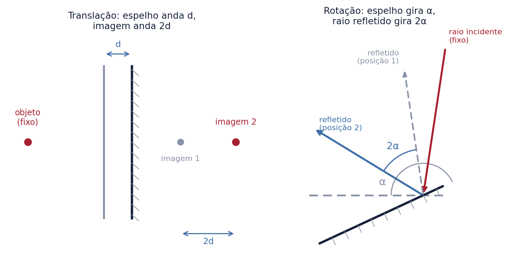

Sem a reflexão da luz, simplesmente não veríamos a maior parte do mundo ao nosso redor. Objetos que não emitem luz própria — uma mesa, uma folha de papel, o rosto de outra pessoa — só são visíveis porque refletem a luz que os atinge até os nossos olhos. Este texto cobre, em profundidade, os quatro pilares da reflexão da luz: as leis da reflexão, a reflexão especular, a reflexão difusa e o espelho plano — com o rigor necessário para ITA, IME e olimpíadas, mas também acessível a quem está vendo o assunto pela primeira vez no Ensino Médio.
1. O que é a reflexão da luz
Reflexão é o fenômeno em que a luz, ao atingir a superfície de separação entre dois meios, retorna ao meio de onde veio, sem atravessar para o outro meio — diferente da refração, em que a luz atravessa e muda de direção (tema de outro material desta série). Toda superfície reflete pelo menos uma parte da luz que incide sobre ela; a fração exata depende do material, do ângulo de incidência e das propriedades da superfície, mas o fenômeno em si é universal.
2. As leis da reflexão
1ª Lei (planaridade): o raio incidente, a reta normal à superfície no ponto de incidência e o raio refletido estão sempre contidos no mesmo plano.
2ª Lei: o ângulo de incidência é sempre igual ao ângulo de reflexão, ambos medidos em relação à normal:
$$\theta_i = \theta_r$$

Dedução pelo Princípio de Fermat (nível avançado). Assim como a lei de Snell na refração, a lei da reflexão pode ser deduzida do Princípio de Fermat — a luz percorre, entre dois pontos fixos A e B (com reflexão em uma superfície entre eles), o caminho de tempo mínimo. Como a velocidade da luz é a mesma antes e depois da reflexão (o mesmo meio), tempo mínimo equivale a caminho mais curto. Minimizando a distância total \(AP + PB\) em função da posição do ponto de reflexão \(P\) sobre a superfície — um problema clássico de geometria, equivalente a refletir o ponto B através da superfície e traçar uma reta —, obtém-se exatamente a condição \(\theta_i = \theta_r\). É a mesma lógica de otimização que gera a lei de Snell, aplicada ao caso mais simples de um único meio.
Reversibilidade do caminho óptico. Uma consequência direta das leis da reflexão (e também da refração) é o princípio da reversibilidade: se um raio de luz percorre um caminho de A até B, refletindo em uma ou mais superfícies pelo caminho, um raio percorrendo o caminho inverso, de B até A, segue exatamente a mesma trajetória. É por isso que, se você consegue ver o rosto de alguém através de um espelho, essa pessoa também consegue ver o seu — cada raio de luz é, individualmente, reversível.
3. Reflexão especular (regular)
Quando um feixe de raios paralelos incide sobre uma superfície lisa — com irregularidades muito menores que o comprimento de onda da luz —, todos os raios obedecem à lei da reflexão de forma coordenada, e o feixe permanece paralelo após refletir. Esse é o caso dos espelhos, chamado de reflexão especular ou regular.
Quando uma superfície se comporta como espelho? O critério de Rayleigh. Não existe uma superfície perfeitamente lisa — a questão é sempre "lisa o suficiente comparada a quê?". O critério de Rayleigh estabelece, de forma aproximada, que uma superfície se comporta como refletor especular quando a variação de altura de suas irregularidades \(h\) satisfaz:
$$h < \dfrac{\lambda}{8\cos\theta_i}$$
onde \(\lambda\) é o comprimento de onda da luz incidente e \(\theta_i\) o ângulo de incidência. Como a luz visível tem comprimento de onda da ordem de \(500\) nm, uma superfície com irregularidades bem menores que isso (um espelho de vidro polido, por exemplo) reflete especularmente; a mesma superfície, se rugosa em escala maior que a luz visível, refletiria de forma difusa (seção 4) — e é por isso que ondas de rádio, com comprimentos de onda muito maiores, "enxergam" uma parede de tijolos como se fosse um espelho liso, algo impossível para a luz visível.
Refletância: quanto da luz é realmente refletida? Mesmo em reflexão especular perfeita, nem toda a luz incidente é refletida — parte é absorvida ou, no caso de materiais transparentes, refratada para dentro do material (tema do texto sobre refração). A fração da intensidade luminosa refletida é chamada refletância e depende do material, do ângulo de incidência e da polarização da luz — seu tratamento completo é dado pelas equações de Fresnel, fora do escopo deste texto introdutório, mas vale saber que espelhos comuns de vidro com revestimento metálico (prata ou alumínio) atingem refletâncias superiores a \(90\%\) para incidência próxima da normal, enquanto a água refletindo luz em incidência quase normal reflete apenas cerca de \(2\%\) (o restante é refratado) — e é por isso que enxergamos claramente o fundo de uma piscina rasa, mas mal enxergamos nosso reflexo nela, a não ser em ângulos rasantes.
Reflexões múltiplas entre superfícies especulares. Quando duas superfícies especulares ficam frente a frente e aproximadamente paralelas (como em um elevador com espelhos nas duas paredes, ou entre duas vitrines de loja em esquinas), a luz pode refletir múltiplas vezes entre elas, formando uma sequência visualmente infinita de imagens, cada uma progressivamente menos intensa (por causa da refletância menor que \(100\%\) a cada reflexão) e mais distante. Esse fenômeno reaparece de forma quantitativa na seção 5, ao tratarmos da associação de espelhos planos.
4. Reflexão difusa (irregular)
Quando a mesma luz incide sobre uma superfície rugosa — como uma parede, um tecido ou uma folha de papel —, cada raio individual ainda obedece rigorosamente à lei da reflexão, mas, como a orientação local da superfície varia ponto a ponto em escala microscópica, os raios refletidos saem espalhados em várias direções. Esse é o caso da reflexão difusa ou irregular, responsável por permitirmos ver objetos opacos comuns de qualquer ângulo.

Um detalhe conceitual importante: a reflexão difusa não é uma "quebra" da lei da reflexão — é exatamente a mesma lei (\(\theta_i = \theta_r\)) aplicada a uma superfície cuja normal muda de direção de ponto a ponto em escala microscópica. Nenhuma nova física é necessária para explicá-la, apenas a mesma lei aplicada a uma geometria irregular.
A Lei de Lambert. Para muitas superfícies difusas reais (chamadas de superfícies lambertianas, uma idealização amplamente usada), a intensidade de luz refletida em uma direção específica não é uniforme em todas as direções: ela é proporcional ao cosseno do ângulo entre essa direção e a normal à superfície:
$$I(\theta) = I_0 \cos\theta$$

É essa lei — e não uma distribuição uniforme em todas as direções — que explica por que uma folha de papel iluminada de frente parece mais brilhante quando olhada de frente do que quando olhada de um ângulo bem rasante, mesmo sendo uma superfície "fosca" (difusora). O conceito complementar de albedo descreve a fração da luz incidente total que uma superfície reflete difusamente (em vez de absorver) — a neve fresca tem albedo próximo de \(0{,}9\) (reflete cerca de 90% da luz incidente), enquanto o asfalto tem albedo próximo de \(0{,}05\) a \(0{,}10\), o que explica por que asfalto aquece muito mais ao sol.
Retrorreflexão: um caso especial. Vale mencionar, por ser frequentemente confundido com reflexão difusa comum, o fenômeno da retrorreflexão: certas superfícies e estruturas (como as esferas de vidro microscópicas em tintas de placas de sinalização de trânsito, ou os "olhos de gato" em estradas) são projetadas para devolver a luz preferencialmente na mesma direção de onde ela veio, não espalhada aleatoriamente nem refletida especularmente — é por isso que uma placa de trânsito retrorrefletiva parece brilhar intensamente quando iluminada pelos faróis de um carro à noite, mas parece opaca e comum sob luz ambiente difusa.
5. Espelho plano
Um espelho plano é uma superfície plana com reflexão especular. É, ao mesmo tempo, o instrumento óptico mais simples e a base para entender espelhos mais complexos.
5.1 Características da imagem. A imagem formada por um espelho plano é: virtual (não pode ser projetada em um anteparo, pois os raios refletidos apenas parecem vir de trás do espelho — nenhuma luz de fato passa por trás dele); do mesmo tamanho do objeto; e localizada à mesma distância do espelho que o objeto, de modo que \(p = p'\) (distância do objeto ao espelho = distância da imagem ao espelho).

5.2 Demonstração de que \(p = p'\). Considere um raio que sai do topo do objeto e incide perpendicularmente sobre o espelho (ângulo de incidência \(0°\)): ele reflete de volta sobre si mesmo. Considere um segundo raio, saindo do mesmo ponto, que incide obliquamente e é refletido até o olho do observador. Usando a lei da reflexão (\(\theta_i=\theta_r\)) e um pouco de geometria — os dois triângulos retângulos formados pelo objeto, o ponto de incidência sobre o espelho e a posição aparente da imagem são congruentes (compartilham o mesmo ângulo em relação à normal e o mesmo cateto ao longo do espelho) —, conclui-se que a distância perpendicular do objeto ao espelho é exatamente igual à distância perpendicular da imagem ao espelho. Esse tipo de demonstração geométrica, e não apenas a memorização do resultado \(p=p'\), costuma ser cobrado em questões dissertativas de ITA e IME.
5.3 O que realmente se inverte (e o que não se inverte). Um dos erros conceituais mais comuns é dizer que o espelho plano "inverte a esquerda com a direita". Isso não é correto no sentido espacial: um espelho plano nunca troca a esquerda pela direita, nem cima por baixo. O que ele inverte, de fato, é o eixo perpendicular ao próprio espelho — a direção de "frente para trás". A sensação de que "esquerda e direita trocaram" surge porque, ao olhar sua imagem no espelho, você está vendo algo que parece "virado de frente para você" (como se alguém tivesse dado meia-volta) — e é essa meia-volta aparente, não uma troca espacial de lados, que faz a mão que você reconhece como "direita" na imagem ocupar visualmente o lado que associamos à esquerda de uma pessoa à nossa frente.

É exatamente esse mecanismo que explica por que a palavra "AMBULÂNCIA" costuma ser escrita espelhada na frente de ambulâncias: como o eixo vertical (para cima) nunca se inverte (é definido pela gravidade, independente de como você está de frente para o espelho), mas o eixo frente-trás sim, o texto escrito espelhado aparece corretamente legível quando visto pelo retrovisor de um carro à frente.
5.4 Campo visual de um espelho plano. Nem todo objeto no ambiente é visível através de um espelho — apenas aqueles dentro do chamado campo visual do observador para aquele espelho, que depende do tamanho do espelho e da posição do observador em relação a ele. O método gráfico para determinar essa região consiste em encontrar a imagem virtual do próprio observador (aplicando \(p=p'\) à posição do observador) e traçar retas dessa posição virtual passando pelas bordas do espelho, prolongando-as para dentro do ambiente — a região delimitada por essas retas é o campo visual.

Note que, quanto mais próximo o observador estiver do espelho, maior tende a ser o campo visual (para um espelho de tamanho fixo) — o motivo pelo qual se aproximar de um espelho pequeno permite enxergar uma porção maior do ambiente ao redor.
5.5 Translação de um espelho plano. Se um espelho plano se desloca de uma distância \(d\) na direção perpendicular ao seu próprio plano — mantendo o objeto fixo —, a imagem se desloca o dobro dessa distância, \(2d\), na mesma direção. Isso decorre diretamente de \(p=p'\): se o espelho se aproxima do objeto em \(d\), a distância objeto-espelho diminui em \(d\), e a distância espelho-imagem também diminui em \(d\) — logo a imagem se aproxima do espelho em \(d\) e, como o espelho também se moveu \(d\) na mesma direção, a imagem se move \(2d\) em relação a um referencial fixo no ambiente.
5.6 Rotação de um espelho plano. Se um espelho plano gira de um ângulo \(\alpha\) em torno de um eixo contido em seu próprio plano — com o raio incidente mantido fixo —, o raio refletido gira de \(2\alpha\). Note a diferença importante em relação à translação: aqui é o raio refletido que gira o dobro do ângulo do espelho, não a posição da imagem que se desloca o dobro de uma distância.

Essa regra do "dobro do ângulo" é a base de instrumentos de medição óptica de alta precisão (como o espelho de Gauss, usado em galvanômetros e certos telescópios de precisão) e do funcionamento de periscópios simples.
5.7 Associação de espelhos planos. Quando dois espelhos planos são associados formando um ângulo \(\alpha\) entre si, um objeto colocado entre eles forma múltiplas imagens, por sucessivas reflexões de uma imagem sobre o outro espelho. Se \(360°/\alpha\) resultar em um número inteiro par, o número total de imagens formadas é dado por:
$$N = \dfrac{360°}{\alpha} - 1$$
Se \(360°/\alpha\) resultar em um número inteiro ímpar, a fórmula acima só vale exatamente quando o objeto está posicionado sobre a bissetriz do ângulo entre os espelhos; fora dela, uma das imagens "duplica" (duas imagens se sobrepõem), e o número efetivamente observado é \(N = 360°/\alpha - 2\) mais uma imagem dupla. Esse tipo de exceção é um clássico "pega-ratão" de prova de olimpíada, e vale a pena registrar como caso especial. O caso particular \(\alpha = 0°\) (espelhos paralelos, frente a frente) corresponde ao limite de infinitas imagens mencionado na seção 3. Esse princípio é também a base de brinquedos como o caleidoscópio.
6. Exemplo resolvido
Dois espelhos planos formam um ângulo de \(\alpha = 45°\) entre si, com um objeto puntiforme colocado entre eles, fora da bissetriz. Determine o número de imagens formadas.
$$\dfrac{360°}{\alpha} = \dfrac{360°}{45°} = 8 \quad (\text{par}) \;\Rightarrow\; N = \dfrac{360°}{\alpha} - 1 = 8 - 1 = 7 \text{ imagens}$$
Como o resultado de \(360°/\alpha\) é par, a fórmula vale exatamente independentemente da posição do objeto entre os espelhos (não é necessário estar sobre a bissetriz) — são formadas \(7\) imagens distintas.
Conclusão
As leis da reflexão parecem, à primeira vista, simples o bastante para serem memorizadas em uma linha — mas seus desdobramentos são profundos: a distinção entre reflexão especular e difusa explica por que vemos o mundo do jeito que vemos; a Lei de Lambert quantifica precisamente como a luz difusa se distribui; e o espelho plano, o mais simples dos instrumentos ópticos, esconde sutilezas — como a verdadeira natureza da sua "inversão", seu campo visual limitado, e as regras precisas de translação e rotação — que só se revelam com um olhar atento e rigoroso. Dominar esses quatro pilares é o alicerce necessário antes de avançar para espelhos esféricos, lentes e instrumentos ópticos mais complexos.